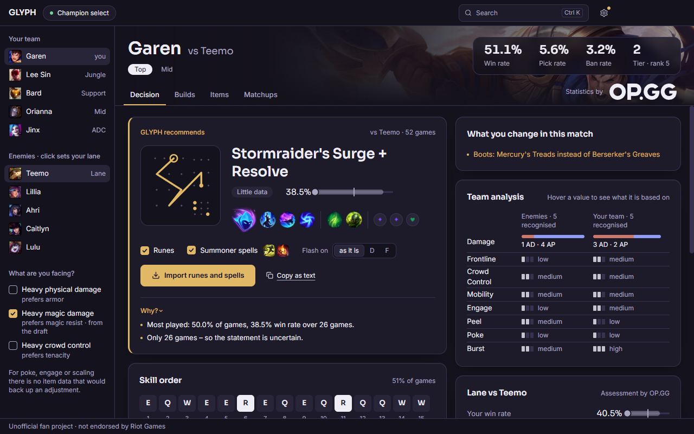

GLYPH
What should I play, what should I build, and why? Answers for champion select, each with its numbers.
Glyph is a free, open-source Windows app for League of Legends. It notices your champion select, reads both teams and shows which runes and items to take in this game. Every recommendation says what it rests on, and one click imports the runes and summoner spells into the client.
Source code and details on GitHub
Glyph isn't endorsed by Riot Games and doesn't reflect the views or opinions of Riot Games or anyone officially involved in producing or managing Riot Games properties. Riot Games and all associated properties are trademarks or registered trademarks of Riot Games, Inc. Glyph is not affiliated with OP.GG.